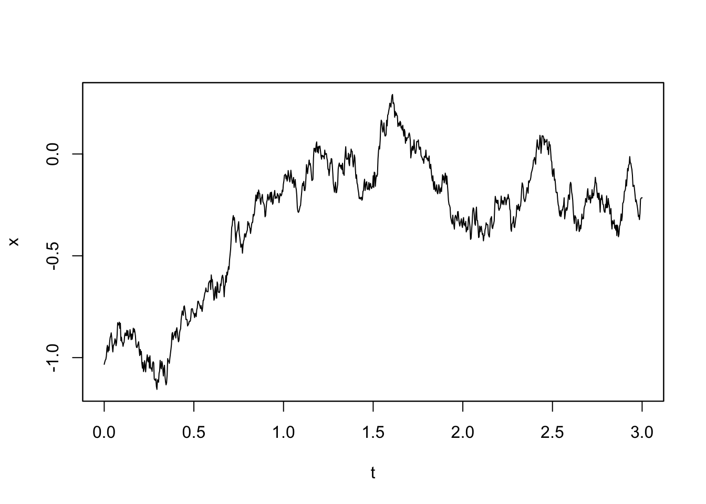
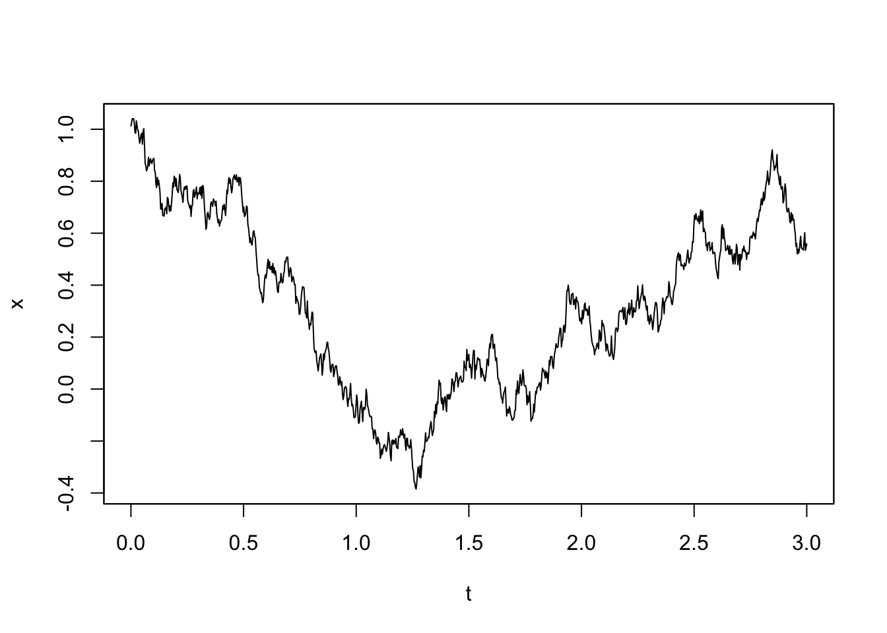
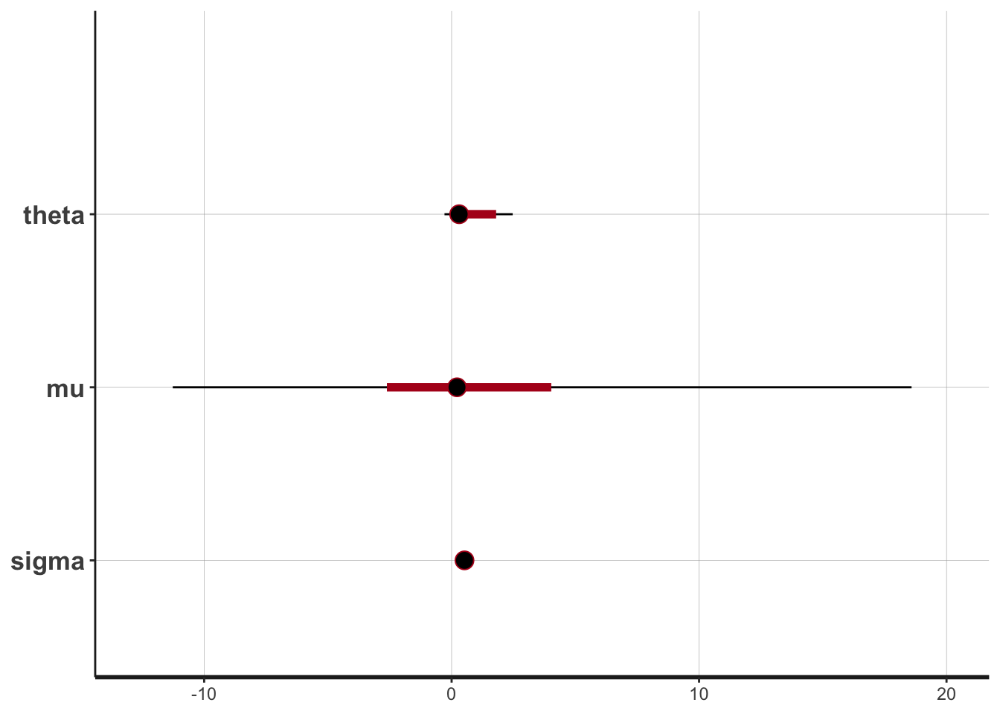
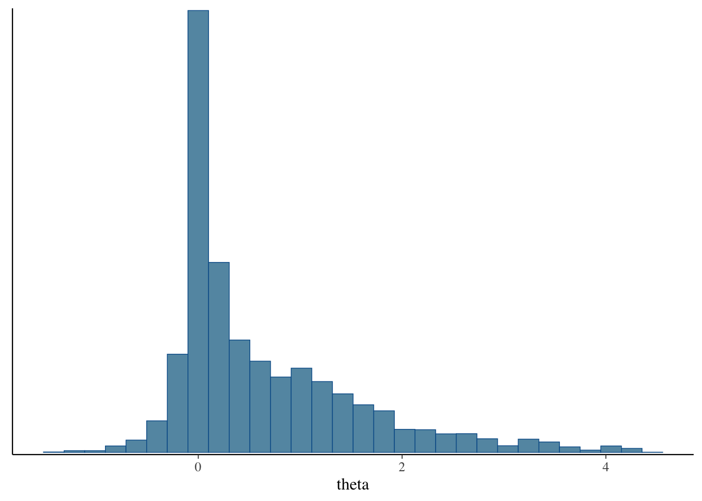

YUIMA 入門
2024-05-17
A Blog Entry on Bayesian Computation by an Applied Mathematician
$$
$$
R の YUIMA パッケージに関する詳細は，次の記事も参照：
確率過程の統計推測を行うための R パッケージ yuima では多次元の SDE \[
dX_t=b_t^\theta(X_t)\,dt+\sigma_t^\phi(X_t)\,dW_t,\qquad X_0\in\mathbb{R}^d,
\] に対してパラメータ \(\theta\in\mathbb{R}^{d_\theta},\phi\in\mathbb{R}^{d_\phi}\) の推定を実行することができる（YUIMA の記事 も参照）．
YUIMA におけるパラメータ \(\theta,\varphi\) の推定には，qmle() による擬似最尤推定量を用いることも，adaBayes() による一般化ベイズによる事後平均推定を実行することも可能である．
現状の adaBayes() 関数では，自前のランダムウォーク MH アルゴリズムや p-CN アルゴリズムを用いている．
Stan との連携Stan は Hamiltonian Monte Carlo 法を用いた事後分布サンプリングを，確率モデルを定義するだけで実行することができる言語である．
加えて，バックグラウンドで C++ を用いているため，非常に高速な MCMC 計算が可能である．
確率的プログラミング言語 Stan については次の記事も参照：
RStan は確率的プログラミング言語 Stan とのインターフェイスを提供するパッケージであり，これを用いることで Stan を通じた HMC を用いた事後分布からのサンプリングが実行できる．
ここでは adaBayes() 関数をさらに効率的にするために，Stan を用いた事後分布サンプリングを可能にする関数 adaStan() の実装を試みる．
具体的には，R において次のような関数を定義することになるだろう．
必ずしもベストな方法ではないかもしれないが，まずは RStan を用いてスケッチをしてみる．改良版は第 4 節参照．
library(yuima)
library(rstan)
yuima_to_stan <- function(yuima){
excode <- 'data {\n int N;\n vector[N+1] x;\n real T;\n real h;\n}
parameters {\n'
for(i in 1:length(yuima@model@parameter@all)){
excode <- paste(excode, " real", yuima@model@parameter@all[i], ";\n")
}
excode <- paste(excode,"\n}")
excode <- paste(excode,'\nmodel {\n x[1] ~ normal(0,1);\n for(n in 2:(N+1)){')
excode <- paste(excode,
"\n x[n] ~ normal(x[n-1] + h *", gsub("x", "x[n-1]", yuima@model@drift), ",sqrt(h) *", gsub("x", "x[n-1]", yuima@model@diffusion[[1]]),");\n }")
excode <- paste(excode,'\n}\n')
}
adaStan <- function(yuima){
excode <- yuima_to_stan(yuima)
sde_dat <- list(N = yuima@sampling@n,
x = as.numeric(yuima@data@original.data),
T=yuima@sampling@Terminal,
h=yuima@sampling@Terminal/yuima@sampling@n)
fit <- stan(model_code=excode,
data = sde_dat,
iter = 1000,
chains = 4)
return(fit)
}excode 変数に格納する．
adaStan 関数の本体である．Yuima モデルの全てのパラメータについてループを開始して，excode にパラメータの宣言を追加していく．
x[1] は \(\mathrm{N}(0,1)\) に従う．
x[n] は，前の観測値 x[n-1] に drift 項と diffusion 項を加えたものに従う．これを実装するために，Yuima モデルの drift 項と diffusion 項の定義文を呼び出し，x を x[n-1] に置換することで Stan モデルのコードに埋め込む．
adaStan という関数を定義する．この関数は，Yuima パッケージのオブジェクトを引数として受け取り，Stan での推定を行い，その結果を fit オブジェクトとして返す．
sde_dat を作成する．
fit オブジェクトとして返す．
yuima オブジェクトのスロットの存在のチェックや変数名 x の表記揺れなど，細かな問題も多いだろうが，殊に Stan との接続においてより良い方法を模索したい．
関数内部で Stan コードを文字列として生成していることがダサい．
より良いコードオブジェクトの取り扱い方や，Stan とのより安全で効率的なインターフェイスを模索したい．
Stan を使う以上，どこかで Stan モデルの情報を受け渡すことは必要になるが，できることならばもっと良い方法を考えたい．
adaStan() 関数の挙動を詳しく見るために，次の具体例を考える．
YUIMA を通じて１次元 OU 過程
\[ dX_t=\theta(\mu-X_t)\,dt+\sigma\,dW_t \]
をシミュレーションをするためには，次のようにモデル定義をする：
model <- setModel(drift = "theta*(mu-x)", diffusion = "sigma", state.variable = "x", solve.variable = "x")これだけで，YUIMA は勝手にパラメータを識別してくれる：
model@driftexpression((theta * (mu - x)))model@diffusion[[1]]expression((sigma))これを通じて生成される Stan モデル文は
data {
int N;
vector[N+1] x;
real T;
real h;
}
parameters {
real theta;
real mu;
real sigma;
}
model {
x[1] ~ normal(0,1);
for(n in 2:(N+1)){
x[n] ~ normal(x[n-1] + h * theta * (mu - x[n-1]),
sqrt(h) * sigma);
}
}となるべきであるが，実際その通りになる：
x <- setYuima(model = model)
stancode <- yuima_to_stan(x)
cat(stancode)data {
int N;
vector[N+1] x;
real T;
real h;
}
parameters {
real theta ;
real mu ;
real sigma ;
}
model {
x[1] ~ normal(0,1);
for(n in 2:(N+1)){
x[n] ~ normal(x[n-1] + h * (theta * (mu - x[n-1])) ,sqrt(h) * (sigma) );
}
}CmdStanR による方法library(cmdstanr)
stan_file_variables <- write_stan_file(stancode)
mod <- cmdstan_model(stan_file_variables)mod$print()data {
int N;
vector[N+1] x;
real T;
real h;
}
parameters {
real theta ;
real mu ;
real sigma ;
}
model {
x[1] ~ normal(0,1);
for(n in 2:(N+1)){
x[n] ~ normal(x[n-1] + h * (theta * (mu - x[n-1])) ,sqrt(h) * (sigma) );
}
}などとすることで，一時ファイル上で stan ファイルとバイナリファイルを作成・操作することができる．
mod$stan_file()[1] "/var/folders/7c/j9mzb7pn0wn1k_f9j58c8y480000gn/T/RtmpVCwRPC/model_28b66dedb9ecfce181f60d7f27d0c76d.stan"model {
x[1] ~ normal(0, 1); // 初期（値の事前）分布
x[2:(N + 1)] ~ normal(x[1:N] + h * theta * (rep_vector(mu, N) - x[1:N]), sqrt(h) * sigma); // xの2番目からN+1番目までをベクトル化して定義
}とした方が Stan コードの処理（特に自動微分の計算）が速くなる．
第 1.3 節のサンプルコードでは，adaBayes() はまだ拡散過程のみに対応しており，シミュレーションベースの推定をしている．
一方で Stan では target 変数を用いて，擬似尤度などを用いた一般化ベイズ推定も実行できる．1
target += normal_lpdf(y | mu, sigma);RStan パッケージ詳しくは次稿参照：
前述の OU 過程 1.4
\[ dX_t=\theta(\mu-X_t)\,dt+\sigma\,dW_t \]
で stan 関数でベイズ推定を実行してみます．
パラメータは \[ \begin{pmatrix}\theta\\\mu\\\sigma\end{pmatrix} = \begin{pmatrix}1\\0\\0.5\end{pmatrix} \] として YUIMA を用いてシミュレーションをし，そのデータを与えてパラメータが復元できるかをみます．
sampling <- setSampling(Initial = 0, Terminal = 3, n = 1000)
yuima <- setYuima(model = model, sampling = sampling)
simulation <- simulate(yuima, true.parameter = c(theta = 1, mu = 0, sigma = 0.5), xinit = rnorm(1))# シミュレーション結果
plot(simulation)
さて，このシミュレーション結果から，adaStan() 関数でパラメータが復元できるかを確認しましょう．
rstan_options(auto_write = TRUE)
options(mc.cores = parallel::detectCores())
fit <- adaStan(simulation)print(fit)Inference for Stan model: anon_model.
4 chains, each with iter=1000; warmup=500; thin=1;
post-warmup draws per chain=500, total post-warmup draws=2000.
mean se_mean sd 2.5% 25% 50% 75% 97.5% n_eff Rhat
theta 2.93 0.32 2.00 -0.16 1.48 2.74 4.36 7.11 39 1.09
mu 0.07 0.09 1.62 -0.85 -0.12 -0.06 0.04 3.34 300 1.01
sigma 0.47 0.00 0.01 0.45 0.47 0.47 0.48 0.49 137 1.03
lp__ 3152.13 0.11 1.40 3148.92 3151.24 3152.39 3153.24 3154.02 151 1.04
Samples were drawn using NUTS(diag_e) at Fri Sep 20 17:17:46 2024.
For each parameter, n_eff is a crude measure of effective sample size,
and Rhat is the potential scale reduction factor on split chains (at
convergence, Rhat=1).plot(fit)ci_level: 0.8 (80% intervals)outer_level: 0.95 (95% intervals)
library("bayesplot")
library("rstanarm")
library("ggplot2")
posterior <- as.matrix(fit)
plot_title <- ggtitle("Posterior distributions",
"with medians and 80% intervals")mcmc_areas(posterior,
pars = c("theta", "mu", "sigma"),
prob = 0.8) + plot_title
\(\sigma\) の推定はよくできているが \(\mu\) の精度はあまりよくなく，\(\theta\) はバイアスがある様で，自信を持って間違えることも多い．
brms パッケージbrms や rethinking も，背後で Stan を利用している．これらが文字式をどのように取り扱っているかを調査する．
Stan コードを扱っている関数は .stancode() であった．
最終的に，.compile_model_rstan() と .fit_model_rstan() が呼ばれるようになっている．
最終的にはこれらの関数も，第 1.3 節のサンプルコードと同様の要領で paste0 を使っていた．
オブジェクト志向言語ではコード自体もオブジェクトであり，これを R では Expression と呼ぶ．
１つのクラスからなるわけではなく，call, symbol, constant, pairlist の４つの型からなる．2
次のような操作ができる3
rlang::expr がコンストラクタである：
library(rlang)
z <- expr(y <- x*10)
zy <- x * 10expression オブジェクトは base::eval() で評価できる：
x <- 4
eval(z)
y[1] 40expression には list のようにアクセス可能である：4
f <- expr(f(x = 1, y = 2))
f$z <- 3
ff(x = 1, y = 2, z = 3)f[[2]] <- NULL
ff(y = 2, z = 3)glue パッケージinstall.packages("glue")glue （CRAN, Docs）パッケージは文字列リテラルを扱うパッケージである．
library(glue)Warning: パッケージ 'glue' はバージョン 4.3.1 の R の下で造られましたname <- " Hirofumi\n Shiba\n"
major <- "Mathematics"
glue::glue('My name is {name}. I study {major}. Nice to meet you!') # 名前空間の衝突を避けるために :: を使うMy name is Hirofumi
Shiba
. I study Mathematics. Nice to meet you!glue::glue(" real {param};", param = yuima@model@parameter@all, .collapse = "\n") real theta;
real mu;
real sigma;これを用いると，adaStan() は次のように可読性が高い形で書き直すことができる：
yuima_to_stan_glued <- function(yuima) {
# パラメータの定義部分を作成
parameters <- glue::glue("real {param};", param = yuima@model@parameter@all)
parameters <- paste(parameters, collapse = "\n ")
# drift と diffusion の式内の 'x' を 'x[n-1]' に置換
drift <- gsub("x", "x[n-1]", yuima@model@drift)
diffusion <- gsub("x", "x[n-1]", yuima@model@diffusion[[1]])
# Stanコード全体を作成
template <-
'data {{
int N;
array[N+1] real x;
real T;
real h;
}}
parameters {{
{parameters}
}}
model {{
x[1] ~ normal(0, 1);
for(n in 2:(N+1)) {{
x[n] ~ normal(x[n-1] + h * {drift}, sqrt(h) * {diffusion});
}}
}}'
excode <- glue::glue(template, .trim = FALSE) # parameters が複数行に渡る場合でも分離して出力しない
return(excode)
}yuima_to_stan_glued(yuima)data {
int N;
array[N+1] real x;
real T;
real h;
}
parameters {
real theta;
real mu;
real sigma;
}
model {
x[1] ~ normal(0, 1);
for(n in 2:(N+1)) {
x[n] ~ normal(x[n-1] + h * (theta * (mu - x[n-1])), sqrt(h) * (sigma));
}
}whisker パッケージinstall.packages("whisker")whisker パッケージ（CRAN, GitHub）は Web を中心に採用されているテンプレートシステム Mustache に基づく機能 whisker.render() を提供している．
whisker.render(template, data = parent.frame(), partials = list(),
debug = FALSE, strict = TRUE)library(whisker)
template <-
'Hello {{name}}
You have just won ${{value}}!
{{#in_ca}}
Well, ${{taxed_value}}, after taxes.
{{/in_ca}}'
data <- list(name = "Hirofumi"
, value = 10000
, taxed_value = 10000 - (10000 * 0.4)
, in_ca = TRUE
)
whisker.render(template, data)[1] "Hello Hirofumi\nYou have just won $10000!\nWell, $6000, after taxes.\n"Mustache の記法は Manual を参照．
adaStan.R を参照．
source("adaStan.R")
model <- setModel(drift = "theta*(mu-x)", diffusion = "sigma", state.variable = "x", solve.variable = "x")
sampling <- setSampling(Initial = 0, Terminal = 3, n = 1000)
yuima <- setYuima(model = model, sampling = sampling)
simulation <- simulate(yuima, true.parameter = c(theta = 1, mu = 0, sigma = 0.5), xinit = rnorm(1))
fit <- adaStan(simulation, iter=2000, rstan=FALSE)fit$summary()# A tibble: 4 × 10
variable mean median sd mad q5 q95 rhat ess_bulk
<chr> <dbl> <dbl> <dbl> <dbl> <dbl> <dbl> <dbl> <dbl>
1 lp__ 3101. 3102. 1.52 1.30 3098. 3103. 1.02 245.
2 theta 2.23 2.31 1.35 1.43 -0.0763 4.39 1.03 160.
3 mu 0.141 0.162 0.508 0.147 -0.918 0.849 1.04 118.
4 sigma 0.499 0.499 0.0111 0.0110 0.481 0.518 1.00 2235.
# ℹ 1 more variable: ess_tail <dbl>mcmc_hist(fit$draws("theta"))`stat_bin()` using `bins = 30`. Pick better value with `binwidth`.
なるほど！2000 回ほど繰り返すと，事後分布は２峰性をもち，MAP 推定量はかろうじて正解に近づいている．
(Wickham, 2019) 第17章２節．↩︎
(Wickham, 2019) 第17章２節．↩︎